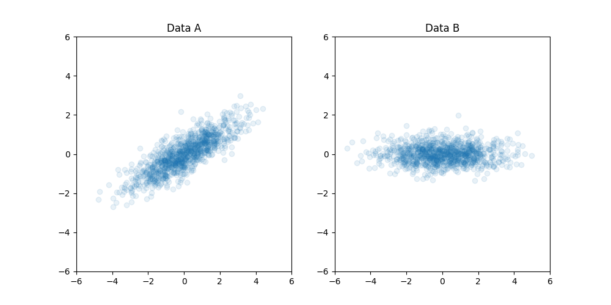
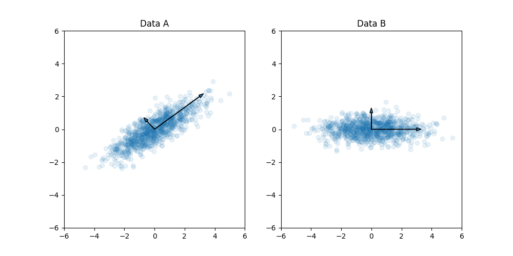
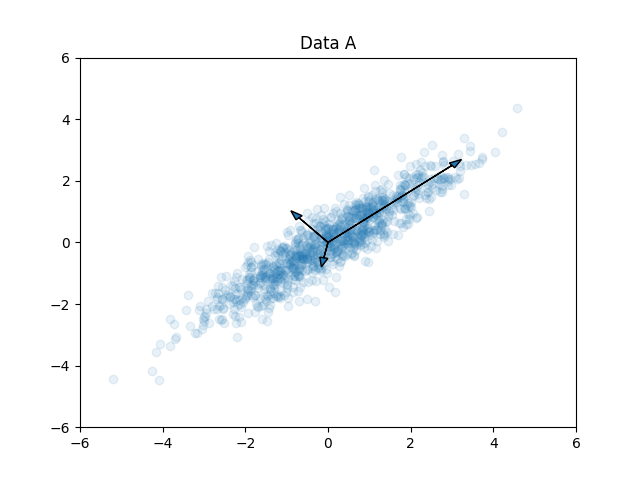

Principal Component Analysis (PCA) and why should we know them -- சாராம்சம்
PCA has wide usecase and can become handy almost everywhere...
Little background
Lets start with few random examples and try to connect them at the end... say, you have high dimentional data and notice significant portion of the data is redundant and want to reduce that data to vital informaiton... or say you have two data points and want to align them... or say you want to know most common feature across the data...
First, let's consider the alignment example, where we have two data cloud shown below and want to align them...
If we know which point in A is which point in B (point-to-point correspondence), then it is straightforward --- we can find translation/rotation. But, we don't know the point-to-point correspondence, how can we approach this problem?
If we ponder, we can say that if we know these two vectors (as shown below) then we can find the needed transformation to align those two point clouds, right?
what are those vectors? what's special about them?
They are the principal components of the data which are mutually perpendicular vectors pointing in directions of high variance (starting from maximum to minimum variance)
In other words, PCA is a technique where we first find the principal component/vector in direction of maximum variance (or vector to which if we project all the data we would get minimum error/residue --- best-fit line/vector). Followed by finding second principal component/vector in direction of second maximum variance (which should be perpendicular to the first Principal Component). The emphasis here is, by definition, that all Principal Components are orthogonal to each other. Therefore, in the end, we end up with principal components perpendicular to each other and pointing in the direction starting from maximum to minimum variance.
Now, if we step up to 3D, then principal components would like this... and similarly, for n-dimensional data, we would have n-prinicipal components...
how can we find those vectors?
We know that the principal component/vector is always pointing in direction of max variance (or vector to which the projection distance/residue of all points is minimal).
To identify the vectors, we can start with an arbitrary vector and calculate project distance/error and iterate until we find the vector with minimum projection error. once we find the principal component, we can repeat the same in perpendicular plane/hyperplane to find the next principal component and so on...
yes, the iterative algorithm is good, but can we do better? That's where PCA comes in.
For the iterative approach, I never explicitly mention how projection error is calculated. There are lots of ways we can measure the projection error, it could be absolute distance (L1) or squared distance (L2) or whatever we want... but of that all, if we assume that we use square error then everything will boil down into simple eigenvalue decomposition of covariance matrix (X'*X) with each eigenvector representing the principal component while eigenvalues representing the variance of the data along the corresponding eigenvector.
Basically, PCA is an elegant way of fitting high-dimension elipsoid in lease-square sense.
Coming back to our initial alignment problem, once we have the principal components of both the data, we can find the needed translation and rotation matrix and align them.
More PCA...
The use case of PCA doesn't just stop there... PCA is widely used in many applications, one of them is dimensionality reduction...
Say, we have a point cloud (as shown below) and want to store them.

For this data, each data point would require two memory elements (x,y). But, do we really need to store both dimension(x,y), can we do some tricks to reduce the required storage? Yes, if you notice the points are resembling a straight line, if we could fit a line then we don't need to store all points. Just slope and intercept of line that satisfy the straight line equation is enough, right? But real world data won't be that easy and that where PCA kicks in...
We can use PCA to identify the principal components and can remove the dimension with minimal variance.
In above example we can see that even if we remove the second dimension, we are not losing much information (actual contribution of each principal components can be determined by eigenvalues of the corresponding eigenvector/principal component).
Food for thoughts...
when we calculate covariance matrix (X'*X), there is an identity matrix in between (X'*I*X), what if we use custom metric matrix/tensor? how that would look like?